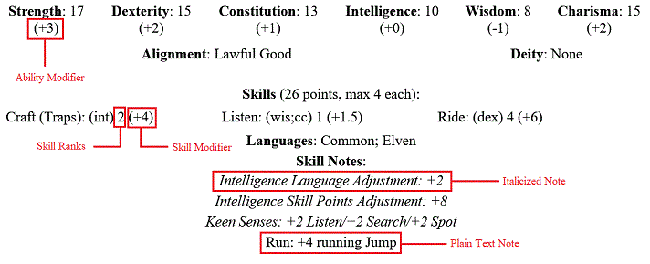

Quilvyn RPG Character Editor
Introduction
Quilvyn is a browser-based editor for RPG characters, particularly those
generated using rules derived from the v3.5 System Reference Document from
Wizards of the Coast. It allows you to enter and modify basic information about
a character—race, class levels, attributes like strength, and so
on—and applies the rules from the v3.5 SRD and other rule sets to modify
these basic attributes and to calculate computed attributes like saving throw
bonuses and armor class. The program formats character attributes into a compact
(typically one page) character sheet web page that you can print for reference
during game play. You can save character information and later reload it into
Quilvyn to update the character's attributes.
Installing and Running Quilvyn
A tar and/or zip file containing the Quilvyn code can be obtained from
https://github.com/jodaf/quilvyn-core/releases.
The Quilvyn program consists of 13 files: README.md, index.html, quilvyn.html,
core/Expr.js, core/Input.js, core/ObjectViewer.js, core/Quilvyn.js,
core/QuilvynRules.js, core/QuilvynUtils.js, core/RuleEngine.js, core/gpl.txt,
plugins/SRD35.js, and plugins/ogl.txt. Documentation is provided by
core/quilvyndoc.html, plugins/homebrew-srd35.html, and a set of image files.
Quilvyn has been successfully tested using these browsers
- Firefox
- Google Chrome
- Opera
- Edge
- Safari (remote installation only—Safari prohibits local pop-up windows)
To run Quilvyn, simply use one of the web browsers listed above to open your
local copy of quilvyn.html. When the program displays a list of rule sets, check
those that you wish to use and press the Ok button to start the character
editor. Quilvyn is written in JavaScript and makes extensive use of pop-up
windows, so you must have both of these enabled in your browser. A reference
installation of Quilvyn using the latest sources is available at
https://www.jodaf.com/quilvyn/.
Generating and Loading Characters
Generating new characters and loading previously saved ones are both handled
through Quilvyn's Character menu. The choices in this menu allow you to
generate a new character, generate a character with random attribute values,
reload the information for a previously-saved character, or import a character
from information saved from a different browser. When you ask for a random
character, Quilvyn opens a form that allows you to specify certain attributes,
such as Race and Class Levels. This helps in the generation of NPCs. You can
either specify these attributes, or leave the form unchanged to have Quilvyn
choose them randomly.
The Character menu's Import option allows you to transfer character information
saved from another browser. In the Import pop-up window, paste the character
attributes definition ("var attributes = { ... }") from the header of the saved
character sheet, then press the OK button. Quilvyn displays the character sheet
generated from these attributes and saves the character into your browser's
persistent storage. If you paste the attributes of multiple characters into a
single Import pop-up, Quilvyn saves all of them and displays the last.
Editing Characters
 The Quilvyn editor displays input fields that allow you to change basic
character attributes. The editor uses three different types of input fields.
Text fields are used for attributes, such as Name and Player, that have
an infinite number of possible values. To modify one of these attributes,
simply type the new value into the text field. In text fields that contain a
number (e.g., Hit Points) you can instead enter a '+' followed by a number, and
Quilvyn will add the number to the existing value of the field. Selection
menus are used with attributes like Alignment, Race, and abilities like
Strength and Intelligence. These input fields give you a pull-down menu that
contains all possible values. Simply select the correct one to change the
attribute. Set menus are used for collections of related attributes like
Skills, Feats, Weapons, and Class Levels. Along with a pull-down menu, these
input fields include either a checkbox or a small text field where you can
enter a value. A checkbox is used for attributes such as Spells, where the
character either has an attribute or not; the text field is used with
attributes such as Skills, where the character has a variable score associated
with the attribute. To change one of these attributes, first use the pull-down
menu to select a particular attribute, then click the checkbox or enter a value
in the text field. A few sets, such as Weapons, show both a checkbox and a text
field. With these, you can either use the checkbox to indicate a value of 1 for
the attribute or enter the value directly into the text field. Set menu
selections that have sub-selections, such as the Perform skill and the Improved
Critical feat, display a second pull-down menu where you specify the
sub-selection value. For example, to add the Improved Critical (Longsword) feat
to a character, first select Improved Critical in the feat pull-down, then
select Longsword in the feat sub-selection pull-down before checking the box
to add the feat. The Clear menu near the top of the editor lets you clear all
attributes in a set at once.
The Quilvyn editor displays input fields that allow you to change basic
character attributes. The editor uses three different types of input fields.
Text fields are used for attributes, such as Name and Player, that have
an infinite number of possible values. To modify one of these attributes,
simply type the new value into the text field. In text fields that contain a
number (e.g., Hit Points) you can instead enter a '+' followed by a number, and
Quilvyn will add the number to the existing value of the field. Selection
menus are used with attributes like Alignment, Race, and abilities like
Strength and Intelligence. These input fields give you a pull-down menu that
contains all possible values. Simply select the correct one to change the
attribute. Set menus are used for collections of related attributes like
Skills, Feats, Weapons, and Class Levels. Along with a pull-down menu, these
input fields include either a checkbox or a small text field where you can
enter a value. A checkbox is used for attributes such as Spells, where the
character either has an attribute or not; the text field is used with
attributes such as Skills, where the character has a variable score associated
with the attribute. To change one of these attributes, first use the pull-down
menu to select a particular attribute, then click the checkbox or enter a value
in the text field. A few sets, such as Weapons, show both a checkbox and a text
field. With these, you can either use the checkbox to indicate a value of 1 for
the attribute or enter the value directly into the text field. Set menu
selections that have sub-selections, such as the Perform skill and the Improved
Critical feat, display a second pull-down menu where you specify the
sub-selection value. For example, to add the Improved Critical (Longsword) feat
to a character, first select Improved Critical in the feat pull-down, then
select Longsword in the feat sub-selection pull-down before checking the box
to add the feat. The Clear menu near the top of the editor lets you clear all
attributes in a set at once.
In a separate browser frame or window, Quilvyn displays a character sheet based
on the values of the editor. Every time you change a value in the editor,
Quilvyn applies the rules from the selected rule set, then updates the
character sheet to show you any computed changes.
A few items in the editor window don't relate directly to the contents of the
character sheet. The About button opens a window with text describing Quilvyn,
the Help button opens one that contains this document, and the Options button
opens a dialog that allows you to set some preferences. The Rules pull-down
allows you to change between different character-generation rule
sets—Quilvyn comes with support for the v3.5 System Reference Document,
and plug-ins for different game versions and particular campaign settings are
available. The Notes button next to this pull-down opens a window with details
about the particular rule set, and the Homebrew pull-down is discussed in
Adding Homebrew Choices. The Character menu is
discussed in Generating and Loading Characters. The Summary
option of the character menu opens a window with a table that summarizes
attributes from all characters that you've opened since starting Quilvyn. This
is intended to assist in planning and running adventures by providing a compact
summary of the abilities of all characters in a party. The Save, Save As...,
Delete..., and HTML options of the character menu are described in
Saving Characters.
Randomizing Attributes
The Randomize menu allows you to let Quilvyn randomly determine most basic
Quilvyn character attributes. The editor will select a random value for the
attribute you choose and update both the editor display and the character
sheet. For the six basic attributes—strength, constitution, dexterity,
intelligence, wisdom, and charisma—Quilvyn computes the random value by
randomly generating four numbers from 1 to 6 and summing the highest three.
For other selection attributes, Quilvyn randomly selects one of the possible
values. When selecting set values such as Spells and Feats, Quilvyn uses other
information about the character (e.g., feat count) to randomly select the
attribute values. Quilvyn selects enough set values to fill in the number of
values appropriate for the character. For example, if a character is entitled
to seven feats and five are already assigned, Quilvyn will randomly select the
remaining two. The only text attribute that Quilvyn knows how to randomize is
the character name. The names that the editor generates are more often amusing
than useful, but you can usually get a pretty decent name from them with a
little creative editing.
Saving Characters
For security reasons, programs like Quilvyn are prohibited from writing files
to your hard disk. Instead, character information is saved to your browser's
persistent storage, where Quilvyn can access it later. The Save and Save
As... options of the Character menu write information about the current
character to the browser's persistent storage. You can later retrieve a saved
character by selecting the character from the Character menu. Use the
Delete... option of the Character menu to remove a character's information
from persistent storage.
If you want to cache a copy of your character sheet for viewing outside of
Quilvyn, select the HTML option of the Character menu. Quilvyn opens a new
window that contains HTML for the character sheet. Copy and paste the contents
of this window into your favorite editor and save the result as a web
page—a file with an extension of .html or .htm.
Selecting the Export... option of the character menu opens a new window that
displays the attributes for all characters in your browser's persistent
storage. You can copy the contents of this window to a file for backup, or you
can paste them into a Quilvyn Import window in a different browser to transfer
characters from one browser to another.
The Character Sheet

The standard character sheet format that Quilvyn produces contains up to seven
sections: Header; Basic Attributes; Features and Skills; Combat; Magic;
Companions; and Notes. Each of these lists related character attribute values,
both entered and computed, along with notes about the attributes. Although most
of the information on the sheet should be clear, a few aspects of the format
require explanation.
-
In the Basic Attributes section, the computed modifier values for strength,
wisdom, etc. are shown in parentheses after the attribute value.
-
In the Skills section, the sheet shows the number of ranks allocated to
each skill. Each skill modifier appears in parentheses after the skill
rank value.
-
Some notes appear in italics; others in plain text. The italicized notes
describe the effects of rules that Quilvyn used in computing attributes.
For example, a sheet for a halfling character might include a note reading
"Halfling Ability Adjustment: +2 Dexterity/-2 Strength", indicating
that Quilvyn has added two to the dexterity value shown on the character
sheet and subtracted two from the strength value. Italicized notes can
normally be ignored during play, since Quilvyn has already incorporated the
effect on the character sheet. Plain text notes, on the other hand,
describe rule effects that need to be applied during the game, so these
should be examined closely. For example, the Combat section of a halfling's
character sheet might include the note "Accurate: +1 attack with slings and
thrown". When rolling a sling attack for this character, you'll need to add
one to the rolled value.
Character Validation
Many feats have prerequisites that the character must meet before selecting
that feat. A few base classes have alignment restrictions, and all prestige
classes have prerequisites. Quilvyn doesn't enforce these requirements; you're
free to enter, say, a chaotic neutral monk if you want to. Quilvyn reports a
count of unmet prerequisites (labeled "Errors") for the current character in
a status bar below the editor. If you press the "..." button on the right end
of this status bar, Quilvyn will pop up a window describing these errors. This
list gives you the information you need to correct mistakes in the character
attributes. An additional list in the same window shows
warnings—comments on character attributes that, while legal, make little
sense. For example, Quilvyn will warn you about a character whose Track feat is
made useless by the absence of any ranks in the Survival skill.
Magic Items and Special Possessions
You can list character possessions in the Notes section of the character sheet.
Quilvyn assumes that any lines in this section that begin with an asterisk mark
items that affect character attributes—abilities, armor class, etc.
Quilvyn refers to items with such effects as "goodies". To have Quilvyn perform
calculations using one of these items, include the name of the affected
attribute and the amount of bonus with it. For example, including these three
lines in the Notes section will raise the character's strength by two, their
Sleight Of Hand skill by four, and their attack and damage with longswords by 1:
* Ring of Strength +2
* Cloak of Distraction (Sleight Of Hand skill +4)
* +1 Longsword
Multiple items can be listed on a single line separated by semicolons, so the
above three items can also be listed as:
* Ring of Strength +2; Cloak of Distraction (Sleight Of Hand skill +4); +1 Longsword
Along with bonuses (and negative values for harmful items), Quilvyn computes the
modifiers for armor and weapons listed as having masterwork quality. You can
also note effects that change a normally cross-class skill into a class skill.
* Masterwork longsword
* Nomad background: Ride is a class skill
Adding Homebrew Choices
You can add custom weapons, armor, familiars, and other choices to Quilvyn's
menus using the Homebrew pull-down menu.
Selecting the Create/Edit Choices... option of the Homebrew menu allows you
to enter new choices or change existing ones. Begin by using the Type pull-down
menu to select the type of choice you want to add. Quilvyn displays a set of
input fields that allow you to enter attributes specific to that type of
choice. Once you have entered all the necessary attributes, press the Save
button. You can retrieve and edit previously-saved choices either by entering
the name of a homebrew choice in the search box or by stepping through your
choices using the '<' and '>' buttons.
Quilvyn allows you to include one or more tags with each homebrew choice;
tagged choices are not made available in Quilvyn's menus until you use the
Enable/Disable Choices... selection from Quilvyn's Homebrew menu to enable
them. This can be handy when running multiple campaigns that each have their
own set of homebrew choices, since you can filter your homebrew choices by tag
and enable only those that are available in the current campaign. Untagged
choices, on the other hand, are added to Quilvyn's menus automatically whenever
Quilvyn starts.
The Delete Choices... option of the Homebrew menu allows you to remove
previously-entered homebrew choices. Note that deleted choices that have been
enabled continue to appear in Quilvyn's menus until the next time you launch
Quilvyn.
Selecting the Enable/Disable Choices... option of the Homebrew menu allows you
to select which homebrew options are available in Quilvyn's menus.
The Export All and Import... options of the Homebrew menu allow you to save and
later reload your homebrew choices. This can be useful for backup purposes and
for copying homebrew choices when you change browsers.
Discussion of adding different types of homebrew choices to the SRD v3.5 rule
set can be found in
SRD v3.5 Homebrew Examples.